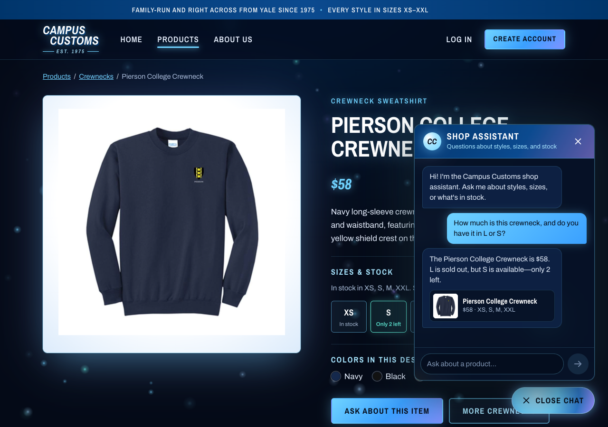
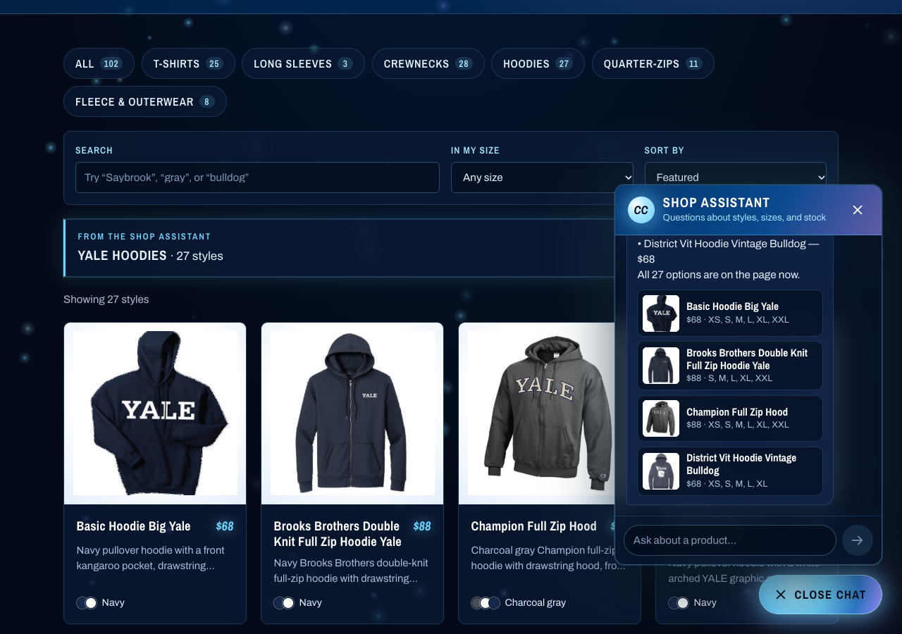
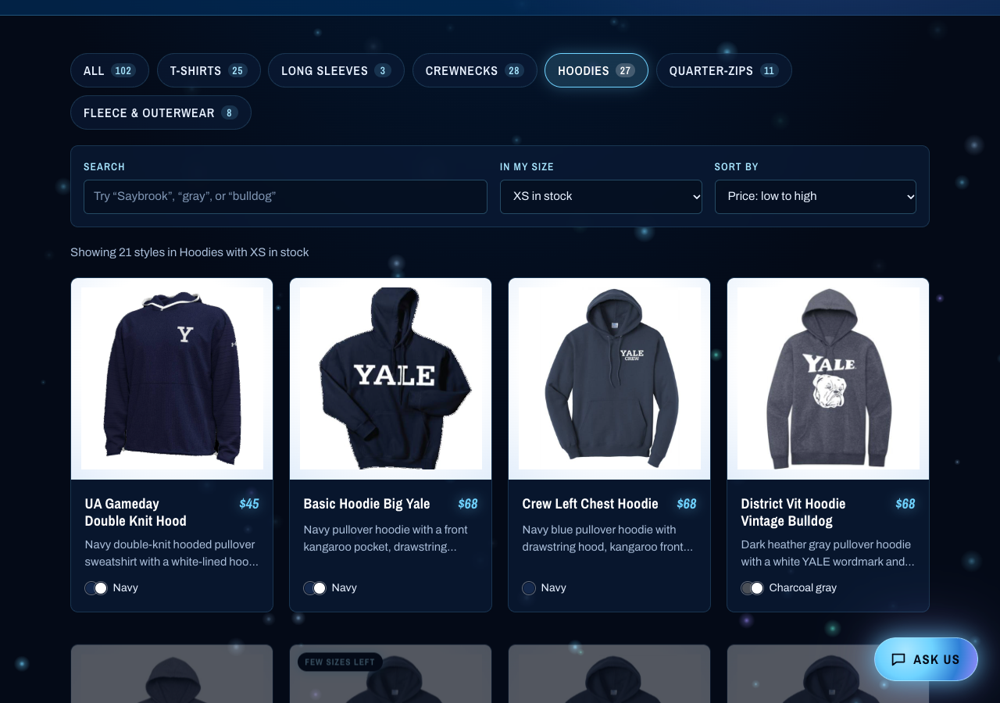

Homework 4 · Problem 11
Campus Customs App Check
Three checks of the running website. Each screenshot was taken from the live app, with the React site on
localhost:5177 and the FastAPI backend on localhost:8000. Every answer was compared
with a direct query of data/campus_customs.db.
1 Chat checks an item's inventory and price PASS
On the Pierson College Crewneck page, the shopper asked "How much is this crewneck, and do you have it in L or S?" The assistant knew which product "this" meant, looked it up, and answered "$58. L is sold out, but S is available, only 2 left." That matches the database exactly, and the size tiles on the page behind it agree.

| Fact | Database (catalogue and inventory) | Assistant said |
|---|---|---|
| Price | $58.00 | "$58" ✓ |
| Size L | 0 in stock | "L is sold out" ✓ |
| Size S | 2 in stock | "S is available, only 2 left" ✓ |
| Card sizes in stock | XS 12, S 2, M 8, XXL 2 (L and XL are 0) | "XS, S, M, XXL" ✓ |
2 Product search cards appear after asking about hoodies PASS
Starting from the Home page, the shopper asked "What hoodies do you have?" The site moved to the Products page on its own and showed every match as a card (photo, name, price, short description) under a "From the shop assistant: Yale Hoodies · 27 styles" banner. The database has exactly 27 hoodies.

| Fact | Database | Website showed |
|---|---|---|
| Number of hoodies | 27 (garment types pullover hoodie and full-zip hoodie) | "27 styles" and 27 cards ✓ |
| Card contents | Image, name, price, and description from catalogue | All four on every card ✓ |
| Prices on cards | Basic Hoodie Big Yale $68, Brooks Brothers Full Zip $88, Champion Full Zip $88 | $68, $88, $88 ✓ |
3 Problem 9 improvement: the find-it-fast toolbar PASS
The Products page toolbar narrowed Hoodies to only styles with XS in stock, then sorted them price low to high. It shows "21 styles in Hoodies with XS in stock," starting with the $45 UA Gameday Double Knit Hood. The database also has 21 hoodies with XS in stock, and $45 is the lowest hoodie price.

/products?style=hoodies&size=XS&sort=price-asc.| Fact | Database | Website showed |
|---|---|---|
| Hoodies with XS in stock | 21 | "Showing 21 styles" ✓ |
| Cheapest of those | UA Gameday Double Knit Hood, $45 | First card, $45 ✓ |